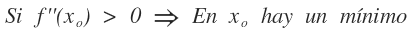
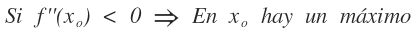

Loas máximos y mínimos de una función son los valores más grandes o más pequeños de ésta, ya sea en una región o en todo el dominio.
Para encontrar los máximos y mínimos de una función, se siguen los siguientes pasos:
1. Encontrar las raíces de la ecuación.
2. Obtener la segunda derivada de la ecuación y evaluar las raíces en ésta.
3. Aplicar las reglas básicas de Máximos y Mínimos (así se identifica si un valor es máximo o mínimo).
4. Evaluar las raices en la ecuación para obtener los valores finales correspondientes de máximos o mínimos.
Las reglas básicas de Máximos y Mínimos son las siguientes:
Si el valor de la derivada segunda en ese punto es mayor que cero, entonces ese punto es mínimo

Si el valor de la derivada segunda en ese punto es menor que cero, entonces ese punto es máximo

En el siguiente programa podrás ingresar una ecuación para posteriormente obtener sus valores máximos o mínimos.